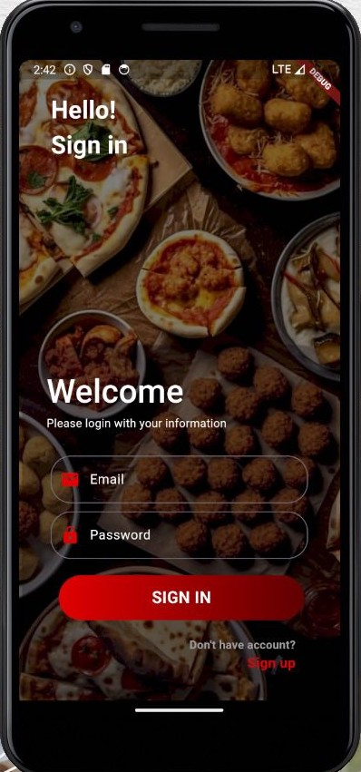
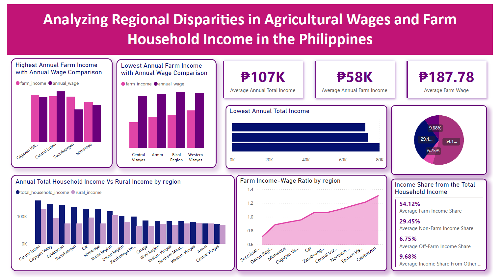

Hi I'm Computer Science Graduate
Karielle Faith Cirunay
Fresh Computer Science graduate with experience in manual software testing, troubleshooting, data validation, and application development through academic and internship projects. Detail-oriented, adaptable, and quick to learn new technologies and testing processes in fast-paced team settings.
ACADEMIC PROJECTS
SALTIK: Salinity Analysis & Level Tracking Integration Kit – An IoT-Based Monitoring System with Intelligent Pump Automation for Aquaculture
SALTIK monitors water salinity and displays the corresponding salinity threshold, keeping a record of the salinity and temperature history for easier tracking.
MEDI-GO: Medicine on the Go
"MEDI-GO" is an online medicine delivery mobile application designed to provide a convenient solution for all your over-the-counter (OTC) medicine needs.

onlyFoods: Craving Finder
A mobile application that helps users find restaurants in Miagao based on the food they are craving. By searching for a specific dish, such as halo-halo, the app displays restaurants that offer it along with their prices, allowing users to choose based on budget, taste preferences, and convenience.
FluSense: Forecasting Influenza Type A and B Cases
This study explores the use of different supervised learning models to develop an accurate influenza forecasting system. The research aims to identify the most effective model for predicting influenza cases to support healthcare management, improve safety measures, and provide timely public health awareness.
PERSONAL PROJECT

Analyzing Regional Disparities in Agricultural Wages and Farm Household Income in the Philippines
This project analyzes agricultural income distribution in the Philippines by examining regional disparities in agricultural wages and farm household income. It aims to identify income imbalances between labor wages and agricultural income, assess whether farming income is sufficient to support household needs, and which regions experience the greatest income inequality and economic vulnerability.
INTERNSHIP EXPERIENCE
GECO Philippines - Iloilo City, Iloilo
Junior Web Developer Intern (Jun 2024-Jul 2024)
Assisted in the development and enhancement of the company's ticket booking and room scheduling systems by improving UI/UX, developing and testing features using HTML, CSS, and JavaScript, collaborating with fellow interns through VS Code Live Share, and earning an Alibaba Cloud Computing certification.
ORGANIZATION EXPERIENCE
UPKB-ILOILO CHAPTER: University of the Philippines Kadugong Bol-anon
MEMBER (Sep 2021 - Jul 2025)
EXECUTIVE SECRETARY (Sep 2023 - Jul 2024)
Litmus 19 event (January 2024) - Organizer (Modern Jazz Committee Member)
Litmus 20 event (January 2025) - Organizer (Modern Jazz Committee Head)
DOCUMENTATION
Special Problem (SALTIK) Documentation from process, prototype,and final defense.